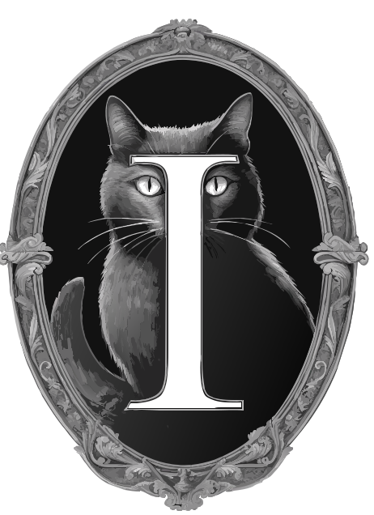

Hey
I'm Dylan.
'm a father of 3, I am happily taken to the love of my life. My goals in life are to be self sufficient in every way possible. I plan on running my own server one day rather than using github pages. That will come with time, but for now working on getting my life sorted. I am a backend developer/website developer by hobby and aspire to be a mold assessor. I am staying to steer clear of the food industry and will keeps blogs about that here. If you are interested great, if not great. This is more for me to have a place to vent and share my thoughts.Check out my blog and check me out on other social medias below:
Instagram Pixelfed Mastodon Odysee